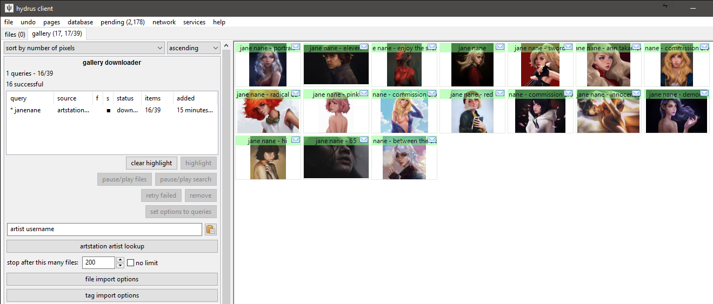
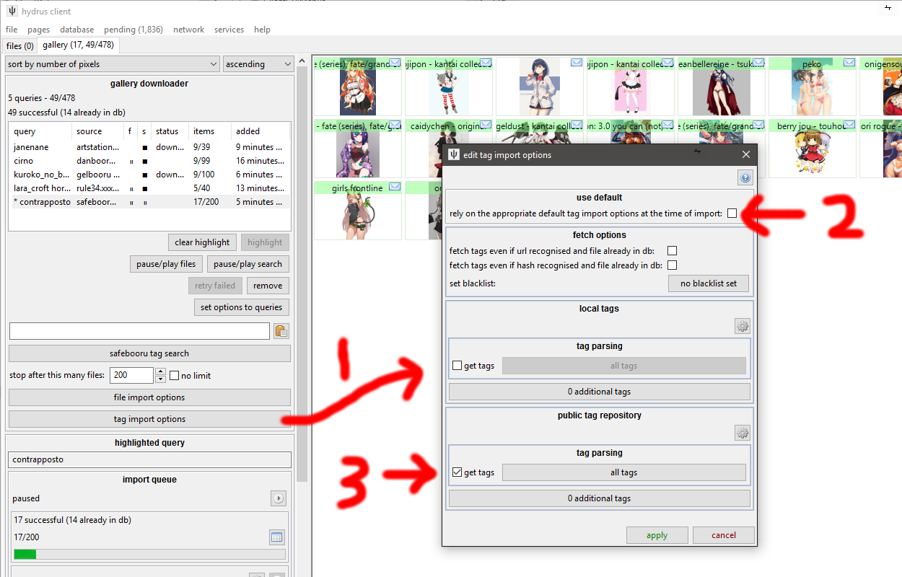
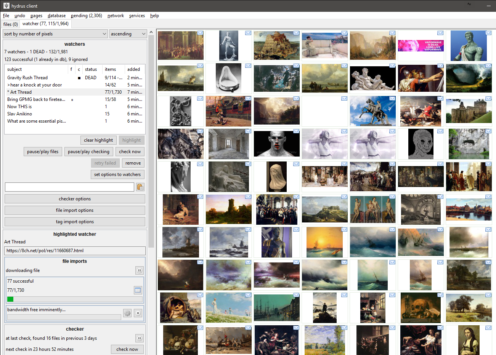

downloading
The hydrus client has a sophisticated and completely user-customisable download system. It can pull from any booru or regular gallery site or imageboard, and also from some special examples like twitter and tumblr. A fresh install will by default have support for the bigger sites, but it is possible, with some work, for any user to create a new shareable downloader for a new site.
The downloader is highly parallelisable, and while the default bandwidth rules should stop you from running too hot and downloading so much at once that you annoy the servers you are downloading from, there are no brakes in the program on what you can get.
It is very important that you take this slow. Many users get overexcited with their new ability to download 500,000 files and then do so, only discovering later that 98% of what they got was junk that they now have to wade through. Figure out what workflows work for you, how fast you process files, what content you actually want, how much bandwidth and hard drive space you have, and prioritise and throttle your incoming downloads to match. If you can realistically only archive/delete filter 50 files a day, there is little benefit to downloading 500 new files a day. START SLOW.
It also takes a decent whack of CPU to import a file. You'll usually never notice this with just one hard drive import going, but if you have twenty different download queues all competing for database access and individual 0.1-second hits of heavy CPU work, you will discover your client starts to judder and lag. Keep it in mind, and you'll figure out what your computer is happy with. I also recommend you try to keep your total loaded files/urls to be under 20,000 to keep things snappy. Remember that you can pause your import queues, if you need to calm things down a bit.
let's do it
Open the new page selector with F9 and then hit download->gallery:

You can do a test download here of a few files if you want, but don't start downloading loads of stuff until you have read about parsing tags!
The gallery page can download from multiple sources at the same time. Each entry in the list represents a basic combination of two things:
- source - The site you are getting from. Safebooru or Danbooru or Deviant Art or twitter or anywhere else.
- query text - Something like 'contrapposto' or 'blonde_hair blue_eyes' or an artist name like 'incase'. Whatever is searched on the site to return a list of ordered media.
So, when you want to start a new download, you first select the source with the button--by default, it is probably 'Artstation' for you--and then type in a query in the text box and hit enter. The download will soon start and fill in information, and thumbnails should stream in, just like the hard drive importer. The downloader typically works by walking through the search's gallery pages one by one, queueing up the found files for later download. There are several intentional delays built into the system, so do not worry if work seems to halt for a little while--you will get a feel for it with experience.
The thumbnail panel can only show results from one queue at a time, so double-click on an entry to 'highlight' it, which will show its thumbs and also give more detailed info and controls in the 'highlighted query' panel. I encourage you to explore the highlight panel over time, as it can show and do quite a lot. Double-click again to 'clear' it.
It is a good idea to 'test' larger downloads, either by visiting the site itself for that query, or just waiting a bit and reviewing the first files that come in. Just make sure that you are getting what you thought you would, whether that be verifying that the query text is correct or that the site isn't only giving you bloated gifs or other bad quality files. The 'file limit', which stops the gallery search after the set number of files, is also great for limiting fishing expeditions (such as overbroad searches like 'wide_hips', which on the bigger boorus have 100k+ results and return variable quality). If the gallery search runs out of new files before the file limit is hit, the search will naturally stop (and the entry in the list should gain a ⏹ 'stop' symbol).
Note that some sites only serve 25 or 50 pages of results, despite their indices suggesting hundreds. If you notice that one site always bombs out at, say, 500 results, it may be due to a decision on their end. You can usually test this by visiting the pages hydrus tried in your web browser.
In general, particularly when starting out, artist searches are best. They are usually fewer than a thousand files and have fairly uniform quality throughout.
parsing tags
But we don't just want files--most sites offer tags as well. By default, hydrus does not fetch any tags for downloads. As you use the client, you will figure out what sorts of tags you are interested in and shape your parsing rules appropriately, but for now, let's do a test that just gets everything--click tag import options:

By default, all 'tag import options' objects defer to the client's defaults. Since we want to change this queue from the current default of 'get nothing' to 'get everything', uncheck the top default checkbox and then click 'get tags' on a tag service, whether that is your local tags or the PTR if you have added it. Hit apply and run a simple query for something, like 'blue_eyes' on one of the boorus. Pause its gallery search after a page or two, and then pause the import queue after a dozen or so files come in--they should be really well tagged!
It is easy to get tens of thousands of tags this way. Different sites offer different kinds and qualities of tags, and the client's downloaders (which were designed by me, the dev, or a user) may parse all or only some of them. Many users like to just get everything on offer, but others only ever want, say, 'creator', 'series', and 'character' tags. If you feel brave, click that 'all tags' button on tag import options, which will take you into hydrus's advanced 'tag filter', which allows you to whitelist or blacklist the incoming list of tags according to whatever your preferences are.
The file limit and file/tag import options on the upper panel, if changed, will only apply to new queries. If you want to change the options for an existing queue, either do so on its highlight panel or use the 'set options to queries' button.
Tag import options can get complicated. The blacklist button will let you skip downloading files that have certain tags (perhaps you would like to auto-skip all images with 'gore', 'scat', or 'diaper'?), again using the tag filter. The 'additional tags' also allow you to add some personal tags to all files coming in--for instance, you might like to add 'process into favourites' to your 'local tags' for some query you really like so you can find those files again later and process them separately. That little 'cog' icon button can also do some advanced things. I recommend you start by just getting everything (or nothing, if you really would rather tag everything yourself), and then revisiting it once you have some more experience. Once you have played with this a bit, let's fix your preferences as the new default:
default tag import options
Hit network->downloaders->manage default tag import options. Set a new default for 'file posts', and that will be the default (that we originally turned off above) for all gallery download pages (and subscriptions, which you will learn about later). You can have different TIOs for each site, but again, we will leave it simple for now.
watching threads
If you are an imageboard user, try going to a thread you like and drag-and-drop its URL (straight from your web browser's address bar) onto the hydrus client. It should open up a new 'watcher' page and import the thread's files!

With only one URL to check, watchers are a little simpler than gallery searches, but as that page is likely receiving frequent updates, it checks it over and over until it dies. By default, the watcher's 'checker options' will regulate how quickly it checks based on the speed at which new files are coming in--if a thread is fast, it will check frequently; if it is running slow, it may only check once per day. When a thread falls below a critical posting velocity or 404s, checking stops.
In general, you can leave the checker options alone, but you might like to revisit them if you are always visiting faster or slower boards and find you are missing files or getting DEAD too early.
bandwidth
It will not be too long until you see a "bandwidth free in xxxxx..." message. As a long-term storage solution, hydrus is designed to be polite in its downloading--both to the source server and your computer. All the downloaders take regular breaks every few minutes, and no domain will be hit more than once a second.
All the client's bandwidth rules are completely customisable. They can get quite complicated. I strongly recommend you not look for them until you have more experience. I especially strongly recommend you not ever turn them all off, thinking that will improve something, as you'll probably render the client too laggy to function and get yourself an IP ban from the next server you pull from.
If you want to download 10,000 files, set up the queue and let it work. The client will take breaks, likely even to the next day, but it will get there in time. Many users like to leave their clients on all the time, just running in the background, which makes these sorts of downloads a breeze--you check back in the evening and discover your download queues, watchers, and subscriptions have given you another thousand things to deal with.
Again: the real problem with downloading is not finding new things, it is keeping up with what you get. Start slow and figure out what is important to your bandwidth budget, hard drive budget, and free time budget. Almost everyone fails at this.
other downloading
There are two other ways of downloading, mostly for advanced or one-off use.
The url downloader works like the gallery downloader but does not do searches. You can paste downloadable URLs to it, and it will work through them as one list. Dragging and dropping recognisable URLs onto the client (e.g. from your web browser) will also spawn and use this downloader.
The simple downloader will do very simple parsing for unusual jobs. If you want to download all the images in a page, or all the image link destinations, this is the one to use. There are several default parsing rules to choose from, and if you learn the downloader system yourself, it will be easy to make more.
logins
The client now supports a flexible (but slightly prototype and ugly) login system. It can handle simple sites and is as completely user-customisable as the downloader system. The client starts with multiple login scripts by default, which you can review under network->downloaders->manage logins:

Many sites grant all their content without you having to log in at all, but others require it for NSFW or special content, or you may wish to take advantage of site-side user preferences like personal blacklists. If you wish, you can give hydrus some login details here, and it will try to login--just as a browser would--before it downloads anything from that domain.
For multiple reasons, I do not recommend you use important accounts with hydrus. Use a throwaway account you don't care much about.
To start using a login script, select the domain and click 'edit credentials'. You'll put in your username/password, and then 'activate' the login for the domain, and that should be it! The next time you try to get something from that site, the first request will wait (usually about ten seconds) while a login popup performs the login. Most logins last for about thirty days (and many refresh that 30-day timer every time you make a new request), so once you are set up, you usually never notice it again, especially if you have a subscription on the domain.
Most sites only have one way of logging in, but hydrus does support more. Hentai Foundry is a good example--by default, the client performs the 'click-through' login as a guest, which requires no credentials and means any hydrus client can get any content from the start. But this way of logging in only lasts about 60 minutes or so before having to be refreshed, and it does not hide any spicy stuff, so if you use HF a lot, I recommend you create a throwaway account, set the filters you like in your HF profile (e.g. no guro content), and then click the 'change login script' in the client to the proper username/pass login.
The login system is new and still a bit experimental. Don't try to pull off anything too weird with it! If anything goes wrong, it will likely delay the script (and hence the whole domain) from working for a while, or invalidate it entirely. If the error is something simple, like a password typo or current server maintenance, go back to this dialog to fix and scrub the error and try again. If the site just changed its layout, you may need to update the login script. If it is more complicated, please contact me, hydrus_dev, with the details!
If you would like to login to a site that is not yet supported by hydrus (usually ones with a Captcha in the login page), see about getting a web browser add-on that lets you export a cookies.txt (either for the whole browser or just for that domain) and then drag and drop that file onto the hydrus network->data->review session cookies dialog. This sometimes does not work if your add-on's export formatting is unusual. If it does work, hydrus will import and use those cookies, which skips the login by making your hydrus pretend to be your browser directly. This is obviously advanced and hacky, so if you need to do it, let me know how you get on and what tools you find work best!